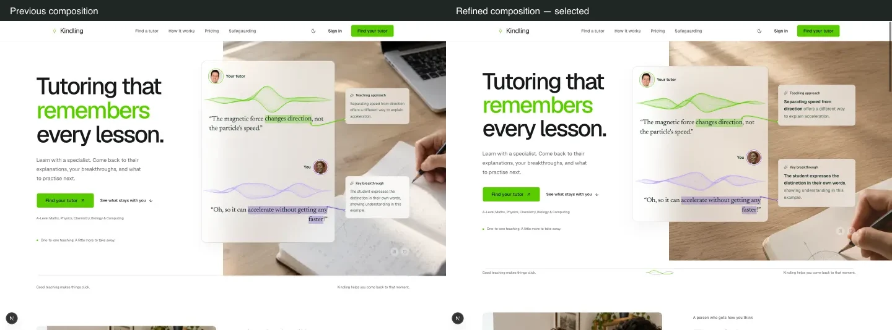
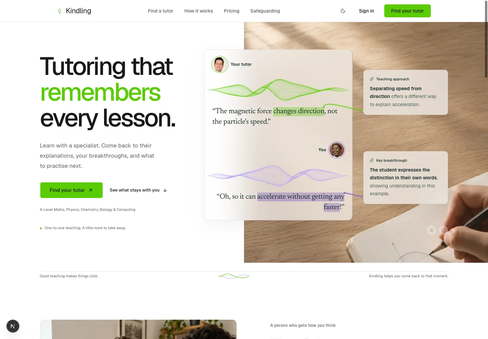
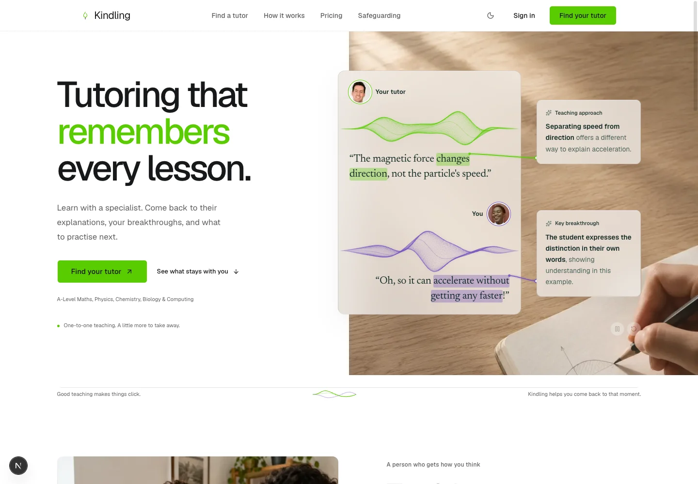
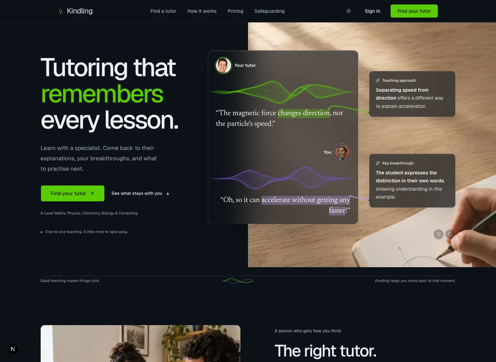
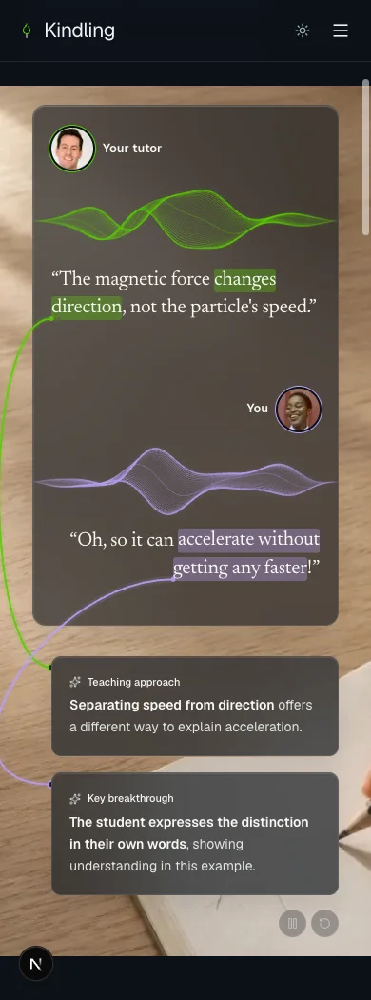
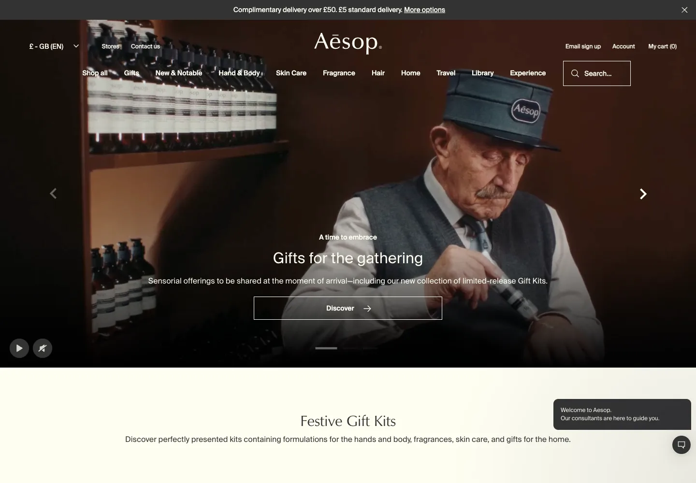
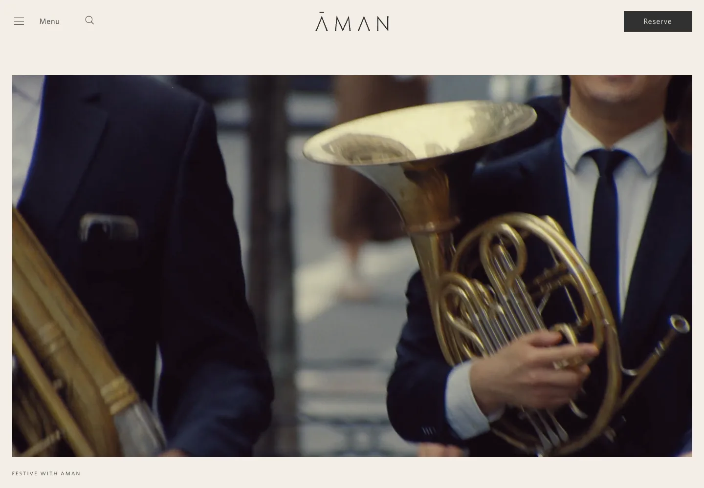
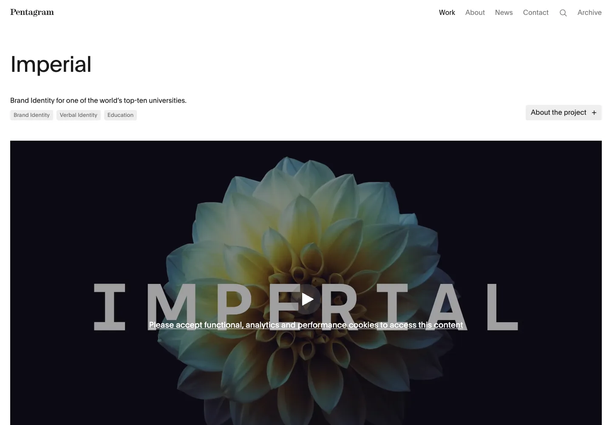

A luminous conversation, in a human setting.
The selected design gives the conversation and insights more room, uses a quieter photograph, and concentrates green and violet in the two voices. The alternative places the stage farther into the photo, but narrows the dialogue and wraps the highlights more.
Read the rationale, sources and verification notes
Before / after
Selected composition
Alternative: stage aligned within the photo
Dark theme
Mobile demo
Aesop: human materials and restrained framing
Aman: generous framing and photographic presence
Pentagram / Imperial: a repeatable visual identity
Reference screenshots are private research artifacts. Static screenshots compare composition; the live page demonstrates the timed reveals. Bang & Olufsen was also visited but its cookie overlay prevented a clean screenshot.